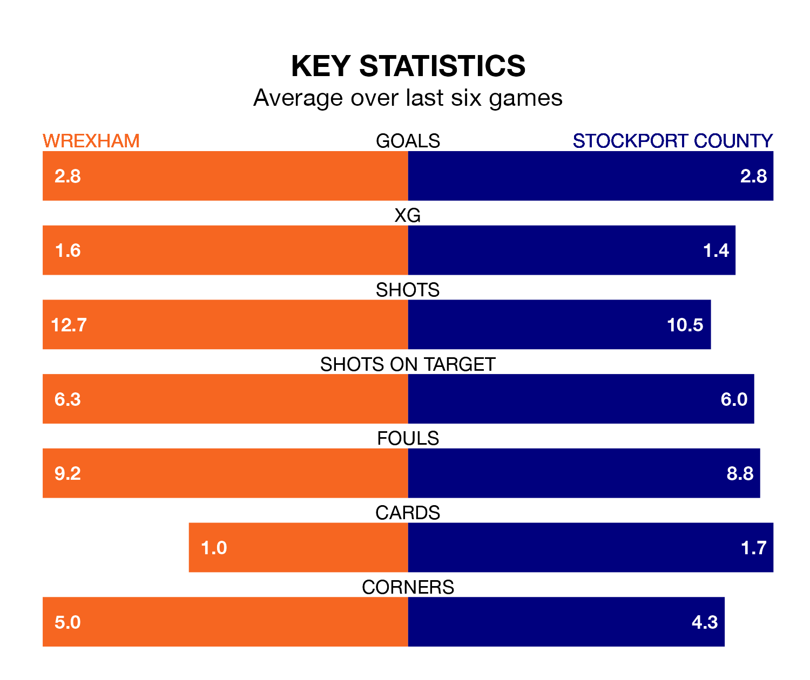

Two of EFL League Two's top sides face each other at the Racecourse Ground in Saturday's kick-off, when third-placed Wrexham host table-topping Stockport County.
Wrexham have picked up 25 wins and 10 draws from 45 games so far this season, and sit seven points below the visitors going into the 3pm match.
The Hatters, meanwhile, have won 27 and drawn 11, picking up 92 points.
With 95 goals in 45 games so far this season, Stockport are the league's highest scorers with 2.1 goals per game. And they are conceding fewer than average, letting in 46 goals at a rate of 1.0 per game.
Wrexham are also above average scorers, with 1.9 goals per game, compared to a league average of 1.5. They have conceded 1.1 goals per game.
The Dragons are in fantastic form in EFL League Two, with five wins and one loss from their last six games.
But with six wins and no losses over that period, County's form is even better – they have taken 18 points from 18, compared to the hosts' 15.
In Ben Hinchiffe, the Hatters can rely on one of the league's safest pair of hands. He has kept 17 clean sheets in his 45 appearances this season, and no 'keeper has prevented the opposition scoring more often in EFL League Two.
In Wrexham's net, Arthur Okonkwo has 14 clean sheets in 35 games.
In the last 10 years, Wrexham and Stockport have played each other on seven occasions. Wrexham won two of them and Stockport five.
On average, the Dragons scored 1.0 goal and the Hatters 2.0 in those matches.
Their last meeting was on September 23, when Stockport won 5-0 at home.
Wrexham's last match was on April 20, a 3-0 win against Crewe Alexandra, with Andy Cannon, Ollie Palmer and Paul Philip Mullin getting the goals for the Dragons.
Stockport beat Accrington Stanley 4-2 last time out, also on April 20, with Kyle Wootton (two), Antoni Sarcevic and Connor Lemonheigh-Evans on the scoresheet.
Updated: 07:59 (UTC), 26/04/24